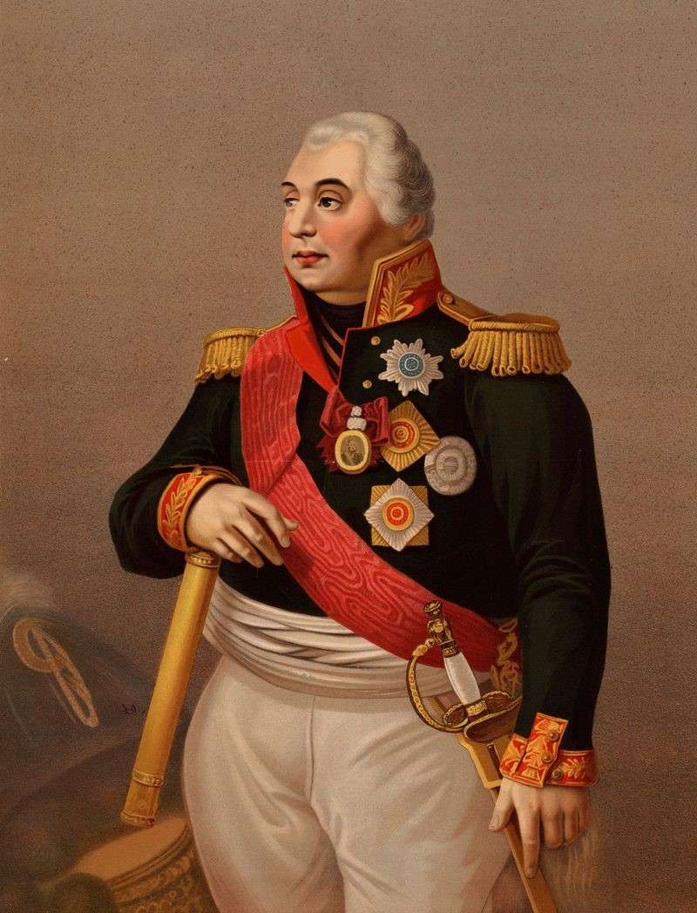

Рокоссовский Константин Константинович (Ксаверьевич) (21.12.1896 - 03.08.1968) родился в Варшаве. Его отец, поляк Ксаверий Рокоссовский, работал машинистом на железной дороге, потом железнодорожным ревизором, мама трудилась учительницей.
В октябре 1917 г. сознательно вступил в Красную гвардию. В годы Гражданской войны находился в составе красногвардейского отряда, командовал эскадроном, кавалерийским дивизионом, полком, бригадой. В 1919 г. вступил в РКП(б). Воевал на Восточном фронте. На завершающем этапе Гражданской войны сражался с бандами барона Унгерна в Забайкалье. Был дважды ранен.2.Кутузов Михаил Илларионович
Ярче всего военный талант Кутузова раскрылся в противостоянии с другим великим полководцем — Наполеоном Бонапартом. Он предпочитал беречь солдат и не вступать в масштабные бои с французами, дав единственное генеральное сражение у деревни Бородино. Современные историки считают, что отсутствие победы при Бородино стало одним из основных факторов поражения Наполеона. Наполеон Бонапарт не слишком уважал своих противников, не жалея для них крепкого словца. Однако для Кутузова он сделал исключение, объяснив провал российской кампании «беспощадными русскими морозами».
3.Александр Суворов
Один из самых лучших военачальников в мире не проиграл ни одного сражения за всю свою военную карьеру. А участвовал он в более чем 60 крупных сражениях. В число самых известных военных кампаний Суворова вошли: взятие Измаила и Итальянский и Швейцарский походы. Измаил — турецкая крепость, построенная по новейшим (для того времени) требованиям крепостного искусства, считалась неприступной. Суворов приказал создать тренировочный лагерь, имитирующий ров и вал Измаильской крепости. После восьмидневной тренировки русские войска штурмом взяли Измаил. Во время похода в Северную Италию русские войска под командованием Суворова освободили итальянцев от владычества Французской Директории. А сам граф получил от сардинского короля пышный чин «Великий маршал войск пьемонтских». Во время 17-дневного Швейцарского похода состоялся знаменитый переход Суворова через Альпы. После штурма перевала Сен-Готард и взятия Чертова моста измученные и голодные русские солдаты вышли к местечку Альтдорф, из которого дальше не было дороги через горы. Суворову и его чудо-богатырям пришлось без какого-либо альпинистского снаряжения, с ранеными товарищами, провиантом и оружием переправляться через хребет Росток и Муотенскую долину. К сожалению, из-за многочисленных предательств австрийцев Швейцарскую кампанию не удалось завершить так, как это планировалось в Петербурге. Французы не были разгромлены, а русский корпус генерала Римского-Корсакова был полностью уничтожен.